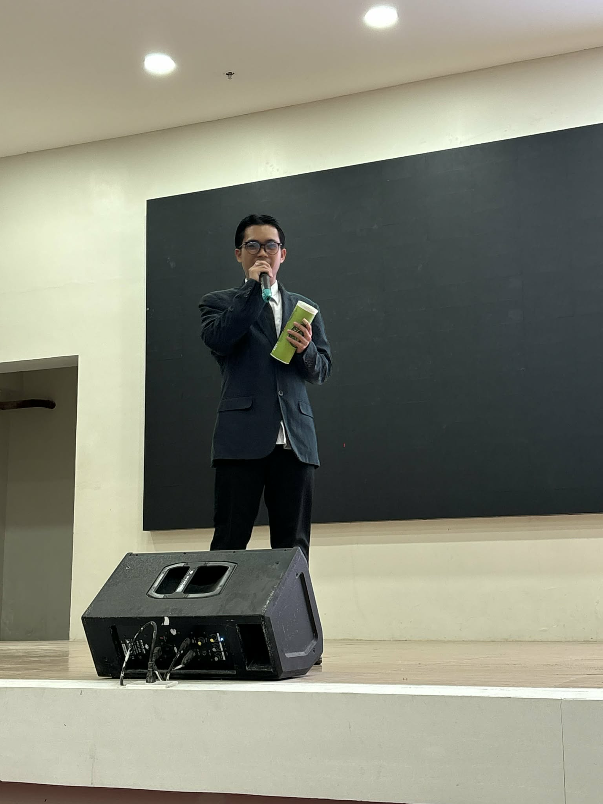

About Me
I am Eian Gabriel Acedera Morales, a graduate from Inosloban-Marawoy Integrated National High School.
I am proudly presenting myself as a student who helped the school achieve such division/regional awards in academic competitions.
My hobbies include playing online games and basketball, listening to music, reading books, and ultimately, exploring the potential of technology by programming.
My goal is to become a software developer and contribute to the advancement of technology, creating innovative solutions that can make a positive impact on society.
Back in my early days as a student at IMINHS, I never imagined that writing would become one of the defining parts of who I am. In fact, it was quite the opposite. Writing was something I used to avoid, something that felt forced and uncomfortable. I saw it as a weakness—a skill that others seemed to naturally possess but I struggled to grasp. During those first years of my high school journey, I never thought that one day, I would stand out because of it. It simply didn't feel like my path.
But growth has a way of surprising us when we least expect it.
As time went on, I found myself slowly changing. The same activity I once disliked started to challenge me in a different way. Instead of resisting it, I began to understand it. Instead of fearing it, I started to embrace it. What was once unfamiliar gradually became something I could navigate with confidence. And before I fully realized what was happening, I was no longer the student who hated writing—I was becoming someone who could excel in it.
That transformation led me to opportunities I never thought I would have. I began joining writing competitions, stepping into spaces that once intimidated me. Competing at the Division Level was something I never imagined for myself, yet there I was—participating, striving, and eventually winning. Each award I received felt surreal, as if I was proving my past self wrong over and over again. It was ironic, almost poetic, how the very thing I once avoided became the very thing that brought me recognition and pride.
But my journey did not end with personal achievements. In fact, one of the most meaningful chapters of my high school life came through leadership. I was given the opportunity to lead Casa Uno Familia, a group that became far more than just a team to me. From the very beginning, I chose to treat every member not just as a participant, but as family. I believed that leadership was not about authority—it was about connection, trust, and unity. Together, we supported one another, celebrated victories, and faced challenges as one. Being their leader was not just a role; it was a responsibility I carried with pride and heart. And through them, I learned that success feels more meaningful when it is shared.
My growth also extended beyond writing and leadership. During a research exhibit, I was given the chance to present my work in front of others—a moment that tested not just my knowledge, but my confidence. Standing there, I realized how much I had changed. I was no longer the hesitant student I once was. I spoke with clarity, conviction, and purpose. Winning the Best Presenter Award during that event became one of the most unforgettable milestones of my journey. It was proof that I had grown—not just as a writer, but as a communicator and as an individual.
Alongside these experiences, I also challenged myself academically by joining various quiz bee competitions. Each competition pushed me to think critically, to stay sharp, and to expand my knowledge. Winning in these events was not just about intelligence—it was about discipline, preparation, and the willingness to keep learning. These experiences helped shape me into someone who is not afraid to take on challenges, no matter how difficult they may seem.
Looking back on my two years as an IMINHS student, I see more than just achievements—I see transformation. I see a version of myself who once doubted his abilities, who once avoided challenges, and who once believed that certain successes were out of reach. And I see how far I have come from that person.
My journey is a reminder that growth does not always start with passion. Sometimes, it begins with discomfort. Sometimes, it begins with failure, doubt, or even dislike. But if we allow ourselves to grow, to try, and to believe, even the most unlikely paths can lead us to our greatest strengths.
What once seemed impossible has now become part of my story—and this is only the beginning.

.jpeg)
.jpeg)
.jpeg)